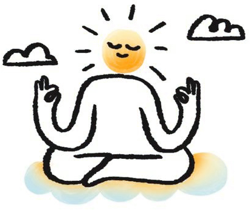

Pour chaque thème : l’illustration actuelle, puis trois pistes dans le même style (trait noir tremblé, taches d’aquarelle jaune, orange et bleu pâle). Dites-moi la lettre que vous préférez, ou ce qu’il faut mélanger.
Mission
ActuelleLa comèteA · L’avion en papierPrendre son envol, à sa façonB · La fuséeAvancer, ensemble, vers plus loinC · Le sommetUn chemin, un cap, une victoire
Valeurs

ActuelleLa sérénitéA · Les mains et le cœurSolidarité, soin, confianceB · Le soleil tranquilleSérénité pour tout le mondeC · Le thé partagéRespect, chaleur, maison
Services
ActuelleLa maisonA · Le seau et l’épongeLe ménage, simple et joyeuxB · Le balai qui brilleLe geste, et le résultatC · Le vaporisateurPropreté, précision, soin